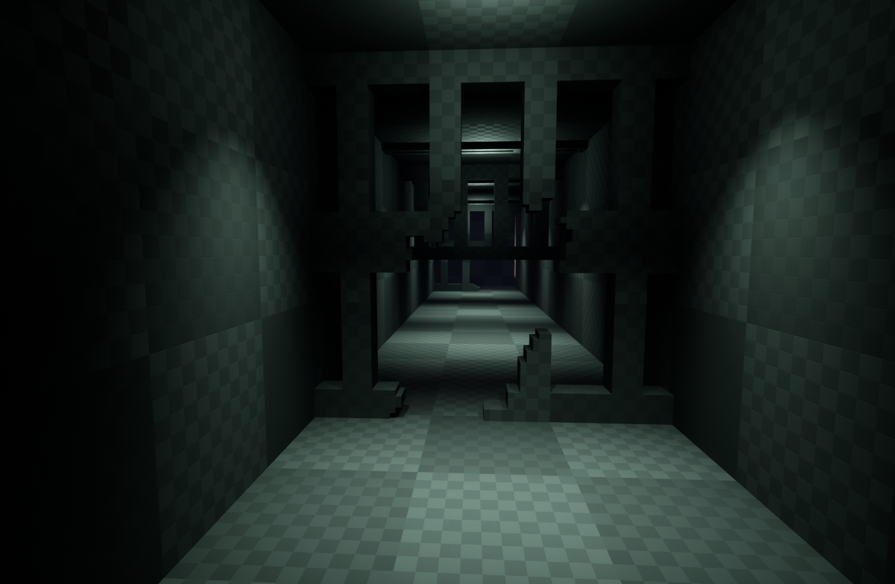
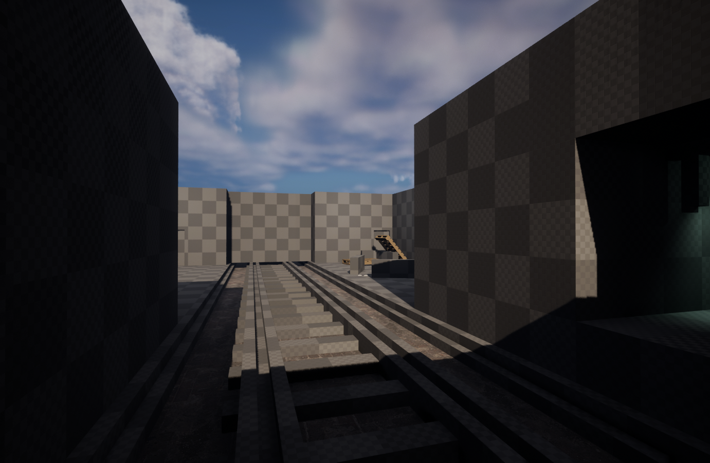

Description: Violet Steele is a third-person action adventure stealth game set in the steampunk country of Novellia.
Once a peaceful and flourishing country, Novellia is now under a hostile takeover by the Hex Alliance due to the abuse of robots fueled by
the revolutionary invention of electricity.
Responsibilities:
Central Vision Holder and decision maker for levels
Played a primary role in the decision making process for finalizing core gameplay mechanics
Created level layouts by Greyboxing, prototyping, and sketching
Collaboration with 3D modelers, animators, and programmers
Working with writers to strengthen gameplay
Understood project goals and personal responsibilities through an agile lens
Met for weekly Scrum meetings to discuss sprints and problem solve
Creating an environment that reflects our games narrative
Enemy placement
Set dressing (Furniture, Lighting, and Resource placement)
Creating 3D assets for 3D modelers (Assets with details so they could better understand what I envisioned)
Research and Planning
Stealth Game Research
Researched and watched videos on Stealth games
Researching designer's perspective's on stealth games
Researching player's perspective's on stealth games
Researched Level Design concepts and structures that could fit our game
Researched games with similar Game Mechanics
Image and Architecture Research
Our game is set in a Steampunk world in a city
Researched Victorian city architecture
Looking at previously done Steampunk themed games
I was close friends with Art Station and Pinterest during this stage! :)
Watched Aubrey Serr's GDC video on designing "Radically Non-Linear Levels” to see if this
structure could fit our game. The key points I took away from his talk were:
Creating circumstances that would allow for player choices.
Giving players safe spaces to think and plan, but balancing it with other spaces that had pressure and stress.
I planned to accomplish this by giving players multiple paths and ways to achieve their goals. For example, four keys are needed to open a door and each could be activated in any order, meaning players could choose which space they wanted to approach first and then where they wanted to move next.
I replayed games or watched gameplay that had mechanics that were similar to ours. Some key take aways:
A lot of games, mostly stealth, had a type of scan that would show points on interest. However, there were some noticable differences between some.
For instance, Dying Light 2's scan (Survior Sense) would play a sonar wave that highlights all enemies while The Last of Us' scan (Listen Mode) would make everything black and white for as long as the player was in Listen Mode.
Hogwarts Legacy's scan (Revelio) had a slight delay so that it matched the wand waving animation.
Prototyping and Iterations
2D Mapping
After settling on our core gameplay mechanics I began prototyping
Creating hand drawn sketches then translating them to 2D Maps with Keys
Iterations of the Sewer section in Level 1 drawn in AutoCAD
3D Mapping
Greyboxed my final 2D iteration (Sewer 4) into a 3D version when I felt satisfied with it
I added detail to some of the greyboxed assets to help give my 3D modeler what I envisioned
Greyboxed versions of the Sewer section in Level 1 in UE5
Design Process
Decision-Making Process
There were two primary reasons for creating this level (Sewer).
The first was to teach the player the basic mechanics of the game, and the second was to support the lore for Violet.
I planned to accomplish this by designing a level that gradually introduced mechanics and give the player opportunities to play with these new mechanics.
The core mechanics of Violet Steele are stealth navigation, noise manipulation, and interactions
I wanted to build a level the reflects Violet’s wits, determination, and her previous knowledge of the city.
Violet has set out to infiltrate a building that’s located in a city under strict curfew.
Because of the curfew, Violet uses an old sewer system to sneak into a loading dock that leads into the city.
Sewer (Tunnel)
The first section was designed to accomplish two things:
The first is show the player how to sprint and crouch through obstacles
The second is to set a short-term goal for the player to reach
The short-term goal is made when a player looks down the tunnel and sees/hears a train passing by.
A point of interest that the player will want to move towards.

Violet's starting point (Left) and where she learns to move and crouch (Right)
Sewer (Opening)
After the player reaches the end of the tunnel, they can see the train as well as the path to get to the train.
However, that path is quickly closed off and the player must then be forced to go another way.

Slight of line to the train is open (Left) and line of slight is cut off (Right)
The player is also taught how to use their “scan” ability which shows points of interest around them.
Here they can pick up small gears they will learn to use shortly.
Overview (Left) and the gears players can pick up (Right)
Sewer (Path)
After the initial path is blocked off players walk forward to see two doors, but one is blocked off.
I chose to block off one door so it was clear to where the player needed to go next
Sewer (Interaction)
After opening the door players begin learning how to interact with the world through puzzles.
Players first complete a small puzzle to get a good understanding of how interactions work
The following room builds off that understanding, but now with more interactions and obstacles
Small puzzle (Left) and the larger puzzle (Right)
Basement
In the Basement Level, I was building around the mechanics: noise manipulation and stealth movement .
To showcase these mechanics:
Enemies had dedicated paths that encouraged players to sneak around
Players were given hiding spots
Space to use their “Gear Throw”
Iteration 1
The first iteration of the basement level didn’t meet the criteria the way it was intended as:
It had low player visibility
Too many choke points, player’s paths were very restrictive
Player’s had difficulty finding a good use for their gear throw
Iteration 2
In the second iteration I fixed these problems by:
Added more hiding spots
Started the player in an elevated position, which would allow players to plan.
More opportunities to use the gear throw
Screenshots of the Basement Level
Placement
Set Dressing
I was responsible with the furniture placement and resource placement
I made sure the furniture and resources were in a place that helpful but not overwhelming.
Giving the player enough spaces to hide but not too many, and same applies for the resources.
I was tasked with creating lighting that helped set the mode and tone of each level
Lighting was also an important part in helping guide the player and keeping them from being lost
A key part of stealth is finding a friend in the dark, so I made use of shadows to help show the player what areas
were considered safe